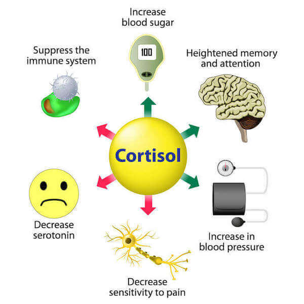

Our Body Fat Calculator can be used to estimate your total body fat percentage based on a single image of yourself.
When you upload your picture, a neural network which was trained to recognize images of different body fat percentages, gives you an answer within 5 seconds (based on the closest body fat percentage range).
In addition to your body fat percentage, we provide you with:
1. Pictures of men and women at different body percentages.
2. Breakdown of the types of fat and fat distribution in humans.
3. How hormones influence body fat accumulation.
4. Information on how you can lose the extra weight fast without exercise.
Understanding Your Body Fat % Ranges and Appearance
The American Council on Exercise has categorized body fat percentages for men and women into 5 separate categories. It is important to remember that these categories are broad generalizations.
Living a healthy lifestyle and being a little overweight is still considerably better than having the body fat percentage of a performance athlete but living off junk food, alcohol and cigarettes.
| Description |
Men
(in percentage) |
Women
(in percentage) |
| Essential fat |
3–5 |
10–13 |
| Athletes |
6–13 |
14–20 |
| Fitness |
14–17 |
21–24 |
| Average |
18–24 |
25–31 |
| Obese |
25+ |
32+ |
Source:
American Council on Exercise
How different body fat percentages look on men and women:
Men

Women

Image Source: Unknown
For More Information, See FAQ #5
Understanding Your Body Fat Distribution and Type
The type of fat distribution you have has as great an impact on your health as does the total body fat you carry, maybe even more.
Knowing your fat distribution is crucial to monitor health risks and avoid diseases later in life. The two types of fat distribution are android fat distribution and gynoid fat distribution.

ANDROID FAT DISTRIBUTION – (also known as apple body shape) is a distribution of excess fat around the abdomen, trunk and upper body. This fat tends to be visceral, which as discussed above, comes with an increased risk of heart disease and stroke.
This type of fat distribution is more common in men than in women. Low levels of testosterone have been found to correlate with higher levels of central fatty deposits. A diet low in refined carbohydrates with regular physical activity can prevent the android distribution from becoming problematic.
GYNOID FAT DISTRIBUTION (also known as pear body shape) is a distribution of fat around the hips, thighs and buttocks. This distribution is found mostly in women and is influenced by the hormone estrogen. Gynoid fat distribution tends to create a natural ‘hourglass’ figure. This shape in human females is generally regarded as attractive to males from an evolutionary standpoint.
However, this is debatable. Excessive gynoid fat is not as prone to harmful diseases as is the android distribution. However, overall body fat mass must always be maintained within a healthy range.

VISCERAL FAT – is the fat that surrounds your internal organs. It is found mostly in the abdomen. Excessive visceral fat contributes to insulin resistance and metabolic syndrome and is very dangerous to human health. It is mostly characterized by excessive fat in the abdomen. A poor diet and lack of physical activity are the leading causes of high visceral fat.
Individuals with a low body fat percentage can still have a very large amount of visceral fat if they eat an unhealthy diet. The good news is that when you eat healthy meals that are low in refined carbohydrates and include daily physical activity in your lifestyle, visceral fat is usually the first type of fat to melt away.
SUBCUTANEOUS FAT – is the fat under the skin that you can easily grab. It is not generally considered as much of a health risk as visceral fat. Subcutaneous fat becomes worrisome when there is too much of it. Losing subcutaneous fat takes discipline and dedication, but with the right foods, a positive mindset, and sufficient time, it is definitely possible.
For More Information , See FAQ #4
Resources to Lose Fat and Change Your Life Forever
1. The Obesity Code: Unlocking the Secrets of Weight Loss - Dr. Jason Fung


I always believed it was my lack of discipline in the gym that caused my weight gain. Dr. Jason Fung helped disprove this myth. He unravelled years of indoctrination by food manufacturers and the fitness industry.
In his book, Dr. Fung elaborates in detail why obesity (fat gain) is a hormonal disease, and most importantly, how you can finally break the vicious fat gaining cycle and achieve long lasting fat loss.
If you are overweight, save yourself years of trial and error and unnecessary sorrow. Pick up a copy of this life-changing book today. I can say with certainty it has changed my life for the better.
2. Hate Reading? Listen to The Obesity Code for FREE with Audible
If you have a hard time reading, audiobooks can be a great substitute. You definitely have to check out Audible from Amazon . If you walk, bike, work out, clean around the house, or commute to work, just plug in your ear phones and get the knowledge you seek. If you wanted to read The Obesity Code but dread the idea of reading it, now you can just listen to it.
And that's not all, if you sign up for Audible, you get 2 free audiobooks as a welcome bonus. I might add that if you are going for this offer, get an audiobook on mediation as well.
Meditation has greatly improved my happiness and outlook on life, and I am positive it will do the same for you. Audible is owned by Amazon, so you know you will be receiving quality content without any compromise.
3. High Quality Instant Bone Broth


I have elaborated on the importance of bone broth in the section below and discussed its wonderful healing and detoxing properties. You can find easy recipes for homemade bone broths if you have the time and are willing to put in the work to make it in your kitchen.
For those of you who are lazy but still want the benefits of drinking bone broth (like me), there are wonderful products available in the market that have done all the hard work of the brewing process for you.
You only need to add hot water to the dehydrated powder and enjoy the benefits of collagen and gelatin proteins in your diet. I personally use the product mentioned above and enjoy it immensely. Plus, it saves me a whole bunch of time which is something I value more than anything in the world.
4. Digital Kitchen Scale


If you fall in the 30 plus body fat percentage range, small changes to your diet and lifestyle will produce the fat loss you seek. However, as you get closer to your ideal body fat percentage, things do get a lot tougher.
This is when it's best to have additional tools at your disposal. The type of food you consume is still very important to your overall fat loss; however, at the end of the day, if you seek a lower body fat percentage, you have to do the extra work by keeping account of everything you eat (i.e., tracking your macros). This is when having a digital kitchen scale is key.
5. Slow Cooker - Crockpot


When you choose the right foods to eat, you will lose fat. Cooking your own meals is a cost-effective way to do this. One of my secret weapons for this is the Slow Cooker (Crockpot). I usually put all the ingredients in it before I leave for work and come back home to a delicious meal ready and waiting for me.
It is easy to learn, simple to clean, and you can make enough food to last you a week without much effort. Slow cooking your meals adds another layer of deliciousness that pan fried or over cooked meals just cannot. If you love roasts and stews like I do, you can’t go wrong with a slow cooker at home. The best thing about the crock pot is the number of recipes you can find online.
6. Exercise Mat


Meditation combined with morning stretches have now become part of my daily routine. Not only does having my own exercise mat at home provide convenience, but on the days I’m too lazy to go to the gym, there is no excuse not to do a few stretches.
Not only will this keep you limber, but it will also reduce the probability of slips and falls and injuries when you work out. I highly recommend getting an exercise mat for yourself. AmazonBasics has a very affordable ½ inch extra thick mat.
Can You Lose 20 to 30 pounds (10 to 15 Kg) Without Any Exercise?
ABSOLUTELY! Here are some tips!
1. All Calories Are NOT The Same
Just try eating 1000 calories of steak for 7 days vs 1000 calories of Doritos. They both have the same number of calories but differ greatly in the time it takes to reach satiety (feeling full) and the way they make you feel in terms of energy. The law of thermodynamics cannot be applied to the human body.
The body must make the switch from using food as an energy source to using fat reserves as an energy source. Simply eating less calories without taking into account the type of calories does not work in the long-term for fat loss. Focus on eating food that does not have many ingredients.
2. Stop Cooking With Vegatable Oil
If you are serious about lowering your omega 6 to omega 3 ratio, elimiinate vegetable oil. A diet that is high in omega 6s usually leads to inflammation, increasing the possibility of developing many diseases. Cook with oils from fruits such as olives, coconuts, and avocados or use butter. Among oils, I usually go for the Colvaita Extra Virgin Olive Oil - it’s both delicious and affordable.
Extra virgin olive oil is an excellent choice for people who want to lose fat. It has a relatively low percentage of saturated fat. Its high smoke point allows it to be used for cooking at high temperatures. It’s no wonder that olive oil has been a staple in Mediterranean cooking for centuries. The monounsaturated fatty acids in extra virgin olive oil (approximately 75 percent) provide additional health benefits.
3. Eliminate Grains From Your Diet
If you are prone to irritable bowel syndrome and suffer from diarrhea, bloating, and constipation, you may find instant relief. Read Wheat Belly by William Davis which talks in detail about why wheat is possibly one of the worst foods you can consume.
A cardiologist by profession, Dr. Davis found that eating grains for breakfast (bagels, toast, waffles) often made him feel lethargic and tired. He started experimenting with a wheat-free diet on patients who were overweight and at high risk for developing diabetes.
He asked them to substitute grains with low-glycemic-index foods for 3 months. To his surprise, Dr. Davis found that the majority of patients who participated in the experiment lost a significant amount of weight and had better blood sugar levels. They also reported feeling more energetic and having better focus at work and school.
4. Stop Snacking Completely
The notion that you need to constantly eat to keep your metabolism going has never been proven.
On the other hand, constant snacking can lead to insulin resistance as the body is constantly pumped with food. Human typically ate one meal a day and it was only after the industrial revolution that the idea of three meals a day was floated to sustain manual labourers.
The post-meal state triggers an immune response in the body and constant snacking can put the immune system under a great deal of physiological stress. This low-grade inflammation can result in a number of diseases as well as drive the body towards early aging.
5. Drink Water. Lots of Water
Drink water everyday. Drinking more water has been shown to burn more calories. Keeping a water bottle beside your bed, desk, or on hand when travelling is an easy way to build this habit, save money, and lose fat as a by-product.
6. Sleep More and Find Ways to Reduce Stress
Getting a good night's sleep is essential in keeping appetite under control and preventing cravings for high-starch foods. When the human body is sleep deprived, there is increased production of the stress hormone cortisol.
This triggers the reward center in the brain and increases food cravings. People who don’t get enough sleep also tend to over-produce the hunger hormone ghrelin and the satiety hormone leptin, making them more susceptible to overeating and feeling less satiated after meals.
Reduce daily stress to lose the fat. Find a healthy way to blow off steam. Something like working out, reading, participating in an outdoor activity, or playing a musical instrument. If you leave the stress unaddressed, you are at greater risk of stress eating.
This type of emotional eating not only contributes to excess calories but also frequently consists of unhealthy foods that cause the body’s fat percentage to creep into the unhealthy range. Stress leads to high levels of cortisol hormone in the body.
7. Have More Dietary Fat In Your Diet
Remember, saturated fat in your diet does not make you fat or clog your arteries. In fact, fat is an important source of energy for the body and a critical component of a healthy balanced diet. Fat has several important functions in human nutrition. It helps in the absorption of vitamins and minerals. It is a necessary ingredient for cell membranes and nerve sheaths.
It is essential for healthy muscles and blood clotting. It prevents inflammation. However, some fats are good for us while others are not. Trans-fats (solid margarine and vegetable shortening) have no health benefits and should be avoided altogether (in fact, they are banned in the United States).
8. Incorporate Fasting In Your Life
Incorporate fasting in your overall weight loss plan as a way to boost your immune system, accelerate your fat loss, and improve your skin. It has worked wonders for me and I know it will for you as well.
Fasting is a scientifically-backed method of burning fat and it has been around since ancient times. For one, it is a great way to reverse insulin resistance and get rid of the stubborn weight that just refuses to go.
Fasting is also known to protect against a number of diseases, such as Alzheimer’s, Parkinson’s, liver disease, heart conditions, and cancer.
It kickstarts the immune system and provides a boost to metabolism. Fasting leads to a natural increase in the secretion of growth hormone, leading to a more energetic state that promotes an efficient exercise session.
9. Start Meditating
Meditation is a great tool to develop the mental fortitude necessary to handle the ups and downs that are likely to occur during your fat loss journey.
Not only that, meditation will help you focus more intensely and be more creative. Practical Meditation for Beginners is great guide for novices.
10. Include Bone Broth In Your Fat Loss Strategy
Include bone broth as part of your diet. It helps strengthen the heart, aids in muscle growth, and contains essential electrolytes such as calcium and magnesium that can easily be absorbed through the gut.
Bone broth is nutrient dense, high in calcium and magnesium and can easily be absorbed into the body. It's not surprising that almost every culture in the world has some variation of it.
Bone broth helps strengthen the heart and aid in muscle growth and it contains electrolytes that can easily be absorbed through the gut. It can be consumed during a fast as it has no carbohydrates and does not interfere in the ketosis process. Though it takes time and patience to simmer and stew a good broth, anyone can make one.
The nutrients and minerals require an extended time to be extracted from the bones. These nutrients come from the cartilage, collagen, glycine and gelatin in the bones.
These four nutrients can treat a leaky gut, reduce inflammation, treat joint pain, prevent bone loss, and protect against cell damage. For more information on Collagen, Click HERE. For more information on Glycine, Click Here.
11. Eliminate Sweeteners from your Diet
Although artificial sweeteners are deemed safe for consumption by the FDA, the reviews on their long term impact in preventing fat gain is mixed. It is interesting to note that as artificial sweeteners have been increasingly consumed, obesity as a whole has risen.
Even though artificial sweeteners do not contain any calories, researchers at the Washington University School of Medicine have discovered that they can affect the insulin (fat storage hormone) response.
If you must have a zero-calorie sweetener, Stevia might be a better choice as it is naturally occurring. The science on the long-term effects of artificial and natural sweeteners is still very young. Use them in moderation and be careful not to abuse either one.
For More Information, See FAQ #6 and #7
Understanding How Hormones Influence Body Fat Accumulation

Dr. Jason Fung in his ground-breaking book The Obesity Code: Unlocking the Secrets of Weight Loss demonstrated how hormones, in particular insulin, are the main drivers of obesity.
In his book, Dr. Fung advocated against victim blaming and pushed for a re-education campaign on how to tackle the obesity epidemic. Let's take a look into how the hormones insulin, leptin, ghrelin and cortisol influence our health.
INSULIN – also known as the fat storage hormone, is secreted by the pancreas when glucose (sugar) is detected in the bloodstream. Insulin allows cells to absorb glucose as a source of energy or store glucose as fat (to be used as energy in the future).
Insulin is secreted to help cells absorb the glucose in the bloodstream when food is consumed.

However, with regular consumption of high glycemic index foods (e.g., white rice, pasta, bread), overeating, excessive visceral fat (fat surrounding your organs), or a lack of exercise, the cells in the body can stop responding to insulin altogether. This leads to excessive glucose in the bloodstream (high blood sugar) and insulin resistance.
High levels of glucose in the blood is one of the precursors to Type 2 Diabetes. Diabetics require external doses of insulin (to supplement what is naturally secreted by the pancreas) in order to achieve the same cell glucose absorption as healthy people.
Regular physical activity and a diet low in refined carbohydrates is, therefore, a safe bet against the onset of insulin resistance and Type 2 Diabetes.

Note: Type 2 Diabetes is entirely preventable, and in some cases, reversible as well. Type 1 Diabetes, on the other hand, occurs due to a lack of insulin production in the pancreas, and there is currently no cure for this condition
LEPTIN – the ‘satiety’ hormone, is produced in the fat cells and signals the brain to stop eating. It helps the body maintain an optimal weight.
Leptin levels are high when satiety is achieved. Healthy individuals tap into fat reserves when leptin levels are low and food is unavailable. Obese individuals, on the other hand, can have high leptin levels but still not feel satiated - becoming desensitized to the hormone.
This leads to leptin resistance, which can have deadly consequences. Not only do such individuals overeat, but due to the overeating, they are unable to cure the leptin resistance.
These individuals also tend to be insulin resistant, which does not help. Diets low in carbohydrates and anti-inflammatory foods can help counter leptin resistance.

GHRELIN – known as the ‘hunger hormone’, is produced by the stomach. It helps stimulate appetite. It has the opposite effect of leptin. It plays a role in regulating the brain's reward system. Levels of ghrelin in the blood rise before a meal and fall after eating. Ghrelin, like hunger, is known to rise and fall in waves.
If you’ve ever been too busy to eat and find yourself not hungry anymore - this is ghrelin at work. Limiting refined carbohydrate intake and eating meals with sufficient protein content promotes satiety and helps reduce ghrelin.
Low ghrelin levels are necessary for long-term fat loss. Fasting has been shown to decrease ghrelin levels and increase growth hormone, which is useful in building lean muscle and aiding fat breakdown.

CORTISOL – known as the ‘stress hormone’, is produced by the adrenal glands when the hypothalamus in the brain senses danger or stress. Cortisol limits nonessential bodily functions in a fight or flight situation, such as appetite and sex drive.

The survival of the human race has been aided by our ability to sense danger and avoid it. However, too much cortisol in the bloodstream (arising from chronic stress) can lead to problems such as anxiety, depression, weight gain and sleeping issues, just to name a few.
It is very important to find healthy ways to manage daily stressors in life. A diet low in refined carbohydrates, plenty of sleep, meditation, daily walks and sports are just some of the ways to manage stress.
Here's an interesting article by Franziska Spritzler on proven ways to fix your hormones for weight loss.
For More Information, See FAQ #4